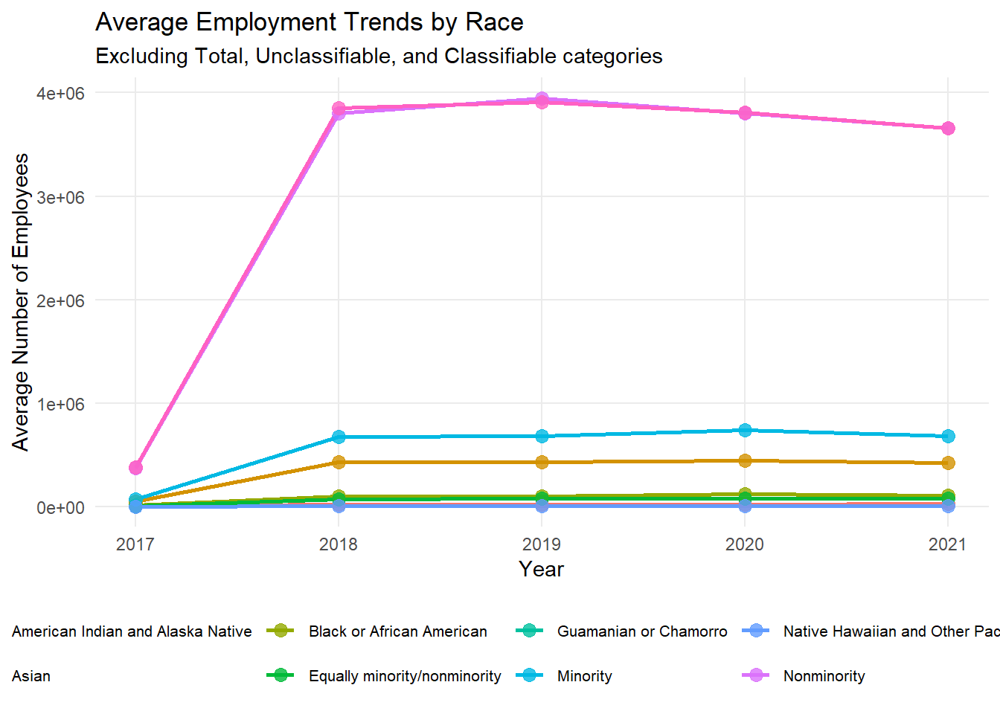

Here we provide a detailed analysis using more sophisticated statistics techniques.
This comes from the file analysis.qmd.
We describe here our detailed data analysis. This page will provide an overview of what questions you addressed, illustrations of relevant aspects of the data with tables and figures, and a statistical model that attempts to answer part of the question. You’ll also reflect on next steps and further analysis.
The audience for this page is someone like your class mates, so you can expect that they have some level of statistical and quantitative sophistication and understand ideas like linear and logistic regression, coefficients, confidence intervals, overfitting, etc.
While the exact number of figures and tables will vary and depend on your analysis, you should target around 5 to 6. An overly long analysis could lead to losing points. If you want you can link back to your blog posts or create separate pages with more details.
The style of this paper should aim to be that of an academic paper. I don’t expect this to be of publication quality but you should keep that aim in mind. Avoid using “we” too frequently, for example “We also found that …”. Describe your methodology and your findings but don’t describe your whole process.
Example of loading data
The code below shows an example of loading the loan refusal data set (which you should delete at some point).
library(tidyverse)
── Attaching core tidyverse packages ──────────────────────── tidyverse 2.0.0 ──
✔ dplyr 1.1.4 ✔ readr 2.1.5
✔ forcats 1.0.0 ✔ stringr 1.5.1
✔ ggplot2 3.5.1 ✔ tibble 3.2.1
✔ lubridate 1.9.4 ✔ tidyr 1.3.1
✔ purrr 1.0.2
── Conflicts ────────────────────────────────────────── tidyverse_conflicts() ──
✖ dplyr::filter() masks stats::filter()
✖ dplyr::lag() masks stats::lag()
ℹ Use the conflicted package (<http://conflicted.r-lib.org/>) to force all conflicts to become errors
data <-readRDS(here::here("dataset/cleaned_data_W_revenue_combined.rds"))temp <- data |>mutate(average_income = PAYANN / EMP *1000) |>filter( NAICS2017_LABEL =="Total for all sectors", ETH_GROUP_LABEL =="Total", SEX_LABEL %in%c("Male", "Female"), VET_GROUP_LABEL =="Total" )ml <-lm(average_income ~ Population + SEX_LABEL, temp)summary(ml)
Call:
lm(formula = average_income ~ Population + SEX_LABEL, data = temp)
Residuals:
Min 1Q Median 3Q Max
-20797 -5483 -951 5017 46505
Coefficients:
Estimate Std. Error t value Pr(>|t|)
(Intercept) 3.315e+04 5.657e+02 58.59 < 2e-16 ***
Population 3.253e-05 6.342e-06 5.13 4.12e-07 ***
SEX_LABELMale 7.673e+03 7.033e+02 10.91 < 2e-16 ***
---
Signif. codes: 0 '***' 0.001 '**' 0.01 '*' 0.05 '.' 0.1 ' ' 1
Residual standard error: 7980 on 513 degrees of freedom
Multiple R-squared: 0.2171, Adjusted R-squared: 0.214
F-statistic: 71.11 on 2 and 513 DF, p-value: < 2.2e-16
ggplot(temp) +geom_point(aes(y = average_income, x = Population))
# A tibble: 2 × 18
NAICS2017_LABEL SEX_LABEL ETH_GROUP_LABEL RACE_GROUP_LABEL VET_GROUP_LABEL
<fct> <fct> <fct> <fct> <fct>
1 Management of comp… Total Equally Hispan… Total Equally vetera…
2 Management of comp… Total Total Equally minorit… Equally vetera…
# ℹ 13 more variables: YIBSZFI_LABEL <chr>, YEAR <dbl>, FIRMPDEMP <dbl>,
# RCPPDEMP <dbl>, EMP <dbl>, PAYANN <dbl>, FIRMPDEMP_S <dbl>,
# RCPPDEMP_S <dbl>, EMP_S <dbl>, PAYANN_S <dbl>, Population <dbl>,
# revenue <dbl>, income <dbl>
m <-lm(income ~ revenue, df)summary(m)
Call:
lm(formula = income ~ revenue, data = df)
Residuals:
Min 1Q Median 3Q Max
-92161 -12333 -3837 5779 1334185
Coefficients:
Estimate Std. Error t value Pr(>|t|)
(Intercept) 3.677e+04 7.358e+02 49.977 <2e-16 ***
revenue 2.315e-03 2.366e-04 9.785 <2e-16 ***
---
Signif. codes: 0 '***' 0.001 '**' 0.01 '*' 0.05 '.' 0.1 ' ' 1
Residual standard error: 33340 on 2749 degrees of freedom
Multiple R-squared: 0.03366, Adjusted R-squared: 0.03331
F-statistic: 95.76 on 1 and 2749 DF, p-value: < 2.2e-16
ggplot(df) +geom_point(aes(x = revenue, y = income)) +geom_smooth(aes(x = revenue, y = income), method ="lm", se =FALSE, color ="red")
`geom_smooth()` using formula = 'y ~ x'

Note on Attribution
In general, you should try to provide links to relevant resources, especially those that helped you. You don’t have to link to every StackOverflow post you used but if there are explainers on aspects of the data or specific models that you found helpful, try to link to those. Also, try to link to other sources that might support (or refute) your analysis. These can just be regular hyperlinks. You don’t need a formal citation.
If you are directly quoting from a source, please make that clear. You can show quotes using > like this
> To be or not to be.
To be or not to be.
Rubric: On this page
You will
Introduce what motivates your Data Analysis (DA)
Which variables and relationships are you most interested in?
What questions are you interested in answering?
Provide context for the rest of the page. This will include figures/tables that illustrate aspects of the data of your question.
Modeling and Inference
The page will include some kind of formal statistical model. This could be a linear regression, logistic regression, or another modeling framework.
Explain the ideas and techniques you used to choose the predictors for your model. (Think about including interaction terms and other transformations of your variables.)
Describe the results of your modelling and make sure to give a sense of the uncertainty in your estimates and conclusions.
Explain the flaws and limitations of your analysis
Are there some assumptions that you needed to make that might not hold? Is there other data that would help to answer your questions?
Clarity Figures
Are your figures/tables/results easy to read, informative, without problems like overplotting, hard-to-read labels, etc?
Each figure should provide a key insight. Too many figures or other data summaries can detract from this. (While not a hard limit, around 5 total figures is probably a good target.)
Default lm output and plots are typically not acceptable.
Clarity of Explanations
How well do you explain each figure/result?
Do you provide interpretations that suggest further analysis or explanations for observed phenomenon?
Organization and cleanliness.
Make sure to remove excessive warnings, hide most or all code, organize with sections or multiple pages, use bullets, etc.
This page should be self-contained, i.e. provide a description of the relevant data.